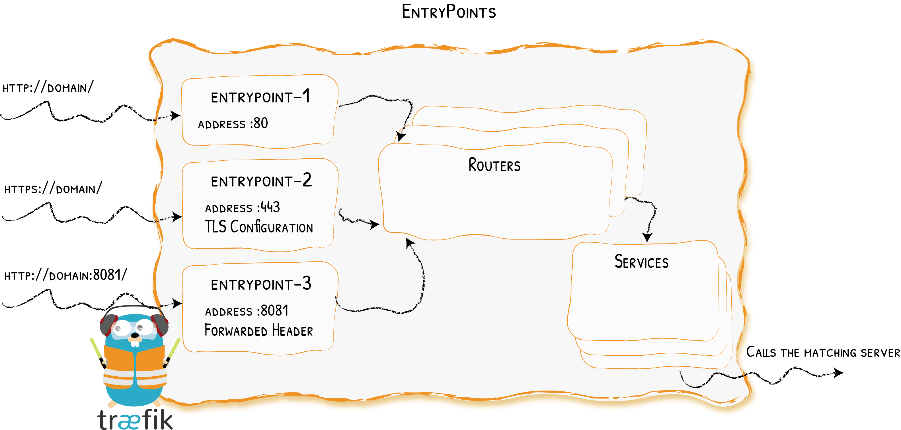

EntryPoints¶
Opening Connections for Incomming Requests

Entrypoints are the network entry points into Traefik. They can be defined using:
- a port (80, 443, ...)
- SSL (Certificates, Keys, authentication with a client certificate signed by a trusted CA, ...)
Configuration Examples¶
HTTP only
[entryPoints]
[entryPoints.http]
address = ":80"We define an entrypoint called http that will listen on port 80.
HTTP & HTTPS
[entryPoints]
[entryPoints.http]
address = ":80"
[entryPoints.https]
address = ":443"
[entryPoints.https.tls]
[[entryPoints.https.tls.certificates]]
certFile = "tests/traefik.crt"
keyFile = "tests/traefik.key"- Two entrypoints are defined: one called
http, and the other calledhttps. httplistens on port80, andhttpson port443.- We enabled SSL on
httpsby giving it a certificate and a key.
Note
In the example, http and https are the names for the entrypoints and have nothing to do with the underlying protocol.
We could have written entryPoints.foo and entryPoints.bar instead.
Automatic HTTPS with ACME
If you don't have certificate files and wish to automatically enable HTTPS, you should have a look at one of Traefik's most praised feature: ACME & Let's Encrypt integration
Client Certificate Authentication
[entryPoints]
[entryPoints.https]
address = ":443"
[entryPoints.https.tls]
[entryPoints.https.tls.ClientCA]
files = ["tests/clientca1.crt", "tests/clientca2.crt"]
optional = false
[[entryPoints.https.tls.certificates]]
certFile = "tests/traefik.crt"
keyFile = "tests/traefik.key"- We enabled SSL on
httpsby giving it a certificate and a key. - Files containing Certificate Authorities (PEM format) were added.
Multiple CAs
It is possible to have multiple CA:s in the same file or keep them in separate files.
Configuration¶
General¶
Entrypoints are part of the static configuration. You can define them using a toml file, CLI arguments, or a key-value store. See the complete reference for the list of available options.
Using the CLI
Here is an example of using the CLI to define entrypoints:
--entryPoints='Name:http Address::80'
--entryPoints='Name:https Address::443 TLS'Note
The whitespace character () is the option separator, and the comma (,) is the value separator for lists.
The option names are case-insensitive.
Using Docker Compose Files
The syntax for passing arguments inside a docker compose file is a little different. Here are two examples.
traefik:
image: traefik
command:
- --defaultentrypoints=powpow
- "--entryPoints=Name:powpow Address::42 Compress:true"or
traefik:
image: traefik
command: --defaultentrypoints=powpow --entryPoints='Name:powpow Address::42 Compress:true'TLS¶
Static Certificates¶
To add SNI support, define certFile and keyFile.
[entryPoints]
[entryPoints.https]
address = ":443"
[entryPoints.https.tls]
[[entryPoints.https.tls.certificates]]
certFile = "integration/fixtures/https/snitest.com.cert"
keyFile = "integration/fixtures/https/snitest.com.key"Note
If you provide an empty TLS configuration, default self-signed certificates will be generated.
Dynamic Certificates¶
To add / remove TLS certificates while Traefik is running, the file provider supports Dynamic TLS certificates in its [[tls]] section.
Mutual Authentication¶
Traefik supports both optional and non optional (defaut value) mutual authentication.
- When
optional = false, Traefik accepts connections only from client presenting a certificate signed by a CA listed inClientCA.files. - When
optional = true, Traefik authorizes connections from client presenting a certificate signed by an unknown CA.
Non Optional Mutual Authentication
In the following example, both snitest.com and snitest.org will require client certificates.
[entryPoints]
[entryPoints.https]
address = ":443"
[entryPoints.https.tls]
[entryPoints.https.tls.ClientCA]
files = ["tests/clientca1.crt", "tests/clientca2.crt"]
optional = false
[[entryPoints.https.tls.certificates]]
certFile = "integration/fixtures/https/snitest.com.cert"
keyFile = "integration/fixtures/https/snitest.com.key"
[[entryPoints.https.tls.certificates]]
certFile = "integration/fixtures/https/snitest.org.cert"
keyFile = "integration/fixtures/https/snitest.org.key"ClientCA.files
You can use a file per CA:s, or a single file containing multiple CA:s (in PEM format).
ClientCA.files is not optional: every client will have to present a valid certificate. (This requirement will apply to every server certificate declared in the entrypoint.)
Minimum TLS Version¶
Min TLS version & cipherSuites
[entryPoints]
[entryPoints.https]
address = ":443"
[entryPoints.https.tls]
minVersion = "VersionTLS12"
cipherSuites = [
"TLS_ECDHE_RSA_WITH_AES_128_GCM_SHA256",
"TLS_RSA_WITH_AES_256_GCM_SHA384"
]
[[entryPoints.https.tls.certificates]]
certFile = "integration/fixtures/https/snitest.com.cert"
keyFile = "integration/fixtures/https/snitest.com.key"
[[entryPoints.https.tls.certificates]]
certFile = "integration/fixtures/https/snitest.org.cert"
keyFile = "integration/fixtures/https/snitest.org.key"Strict SNI Checking¶
With strict SNI checking, Traefik won't allow connections without a matching certificate.
Strict SNI
[entryPoints]
[entryPoints.https]
address = ":443"
[entryPoints.https.tls]
sniStrict = true
[[entryPoints.https.tls.certificates]]
certFile = "integration/fixtures/https/snitest.com.cert"
keyFile = "integration/fixtures/https/snitest.com.key"Default Certificate¶
Traefik can use a default certificate for connections without an SNI, or without a matching domain.
If no default certificate is provided, Traefik generates a self-signed and use it instead.
Setting a Default Certificate
[entryPoints]
[entryPoints.https]
address = ":443"
[entryPoints.https.tls]
[entryPoints.https.tls.defaultCertificate]
certFile = "integration/fixtures/https/snitest.com.cert"
keyFile = "integration/fixtures/https/snitest.com.key"Only One Default Certificate
There can only be one defaultCertificate per entrypoint.
ProxyProtocol¶
Traefik supports ProxyProtocol.
Enabling Proxy Protocol with Trusted IPs
[entryPoints]
[entryPoints.http]
address = ":80"
[entryPoints.http.proxyProtocol]
trustedIPs = ["127.0.0.1/32", "192.168.1.7"]IPs in trustedIPs only will lead to remote client address replacement: Declare load-balancer IPs or CIDR range here.
Insecure Mode -- Testing Environnement Only
In a test environments, you can configure Traefik to trust every incomming connection. Doing so, every remote client address will be replaced (trustedIPs won't have any effect)
[entryPoints]
[entryPoints.http]
address = ":80"
[entryPoints.http.proxyProtocol]
insecure = trueQueuing Traefik behind Another Load Balancer
When queuing Traefik behind another load-balancer, make sure to configure Proxy Protocol on both sides. Not doing so could introduce a security risk in your system (enabling request forgery).
Forwarded Header¶
You can configure Traefik to trust the forwarded headers information (X-Forwarded-*)
Trusting Forwarded Headers from specific IPs
[entryPoints]
[entryPoints.http]
address = ":80"
[entryPoints.http.forwardedHeaders]
trustedIPs = ["127.0.0.1/32", "192.168.1.7"]Insecure Mode -- Always Trusting Forwarded Headers
[entryPoints]
[entryPoints.http]
address = ":80"
[entryPoints.http.forwardedHeaders]
insecure = true